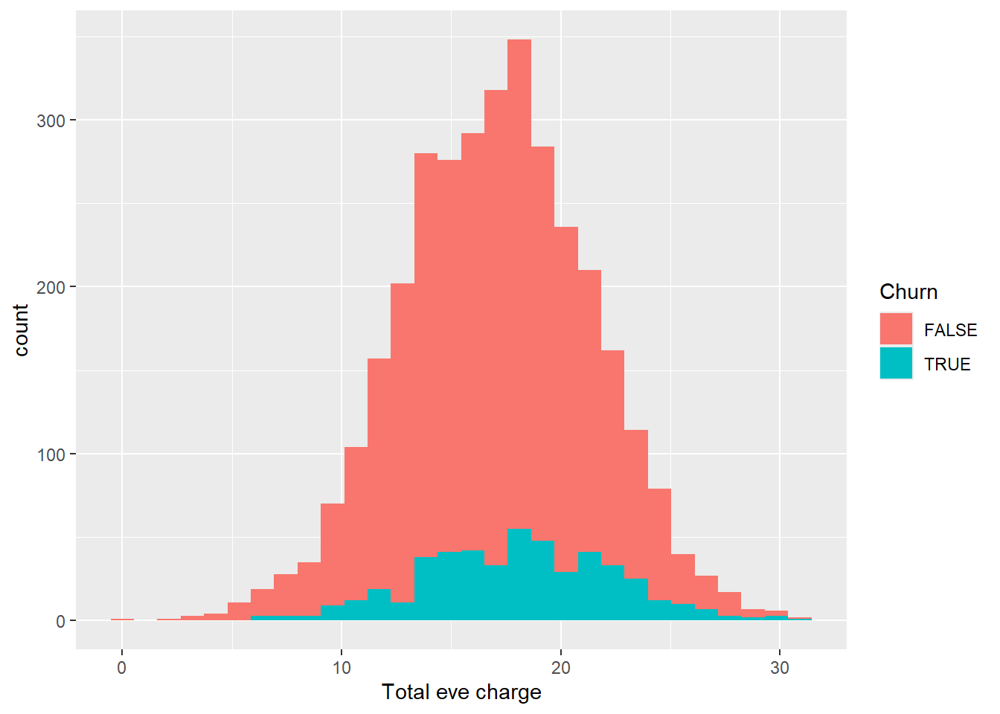

library(tidyverse)
library(tidymodels)
library(data.table)
library(rpart)
library(rpart.plot)
library(doParallel)
all_cores = parallel::detectCores(logical = FALSE)
doParallel::registerDoParallel(cores = all_cores)
churn_data = fread("churn_data.csv") %>% as_tibble()Telecom Customer Churn Analysis
Overview
Churn is the percentage of customers that stop using a service or product over a given period of time. It is an important metric that most of the company is tracking. Analyzing churn will help the organization to identify how huge their churn rate is, what is causing the churn and how can they prevent it from happening.
On this project, we will use Telecom Customer Churn data to answer the following questions:
- What is the proportion of Customer that Churned to those who did not?
- Which State has the highest churn rate?
- What attribute is contributing on the probability that a customer will churn?
After answering Exploratory Questions we will proceed to create 3 Classification Model that will predict Churn. We will compare each model and decide which model to use for predicting whether a customer will churn or no.
Library and Data Import
Exploratory Data Analysis
Check Cardinality
#Check State column
churn_data %>%
count(State, sort = TRUE)# A tibble: 51 × 2
State n
<chr> <int>
1 WV 106
2 MN 84
3 NY 83
4 AL 80
5 OH 78
6 OR 78
7 WI 78
8 VA 77
9 WY 77
10 CT 74
# ℹ 41 more rows#Check International Plan and Voice Mail Plan
churn_data %>%
count(`International plan`,sort = TRUE)# A tibble: 2 × 2
`International plan` n
<chr> <int>
1 No 3010
2 Yes 323churn_data %>%
count(`Voice mail plan`,sort = TRUE)# A tibble: 2 × 2
`Voice mail plan` n
<chr> <int>
1 No 2411
2 Yes 922Majority of customers don’t have an International and Voice Mail plan
churn_data %>%
filter(`Number vmail messages` != 0) %>%
ggplot(aes(x = `Number vmail messages`)) +
geom_histogram()`stat_bin()` using `bins = 30`. Pick better value with `binwidth`.For the number of vmail messages among those customers that has a Voice mail plan, we can see that most of the count are concentrated on 30 voice mail messages. I filtered out those customers with no voice mail plan to avoid underestimation of our histogram for the customers that has the voice mail plan.
The next numerical columns we will explore are all measure of how many minutes that customer spent for calling during the day, eve, night and international call if the customer has an international call plan.
Let’s visualize the distribution for day usage.
churn_data %>%
ggplot(aes(x = `Total day minutes`)) +
geom_histogram()churn_data %>%
ggplot(aes(x = `Total day calls`)) +
geom_histogram()churn_data %>%
ggplot(aes(x = `Total day charge`)) +
geom_histogram()churn_data %>%
ggplot(aes(x = `Total day minutes`,y = `Total day charge`)) +
geom_point()Almost perfect linear relationship between charge and minutes. This is expected to happen as we will be charge more the longer we use the phone for calls.
churn_data %>%
ggplot(aes(x = `Total day calls`, y = `Total day minutes`)) +
geom_point()Total Day Calls column seems to have a different relationship with minutes. This kind of make sense, because the number of calls you make per day doesn’t really mean that you will have higher minutes of call. One can make 3 calls in day where in each call lasts for 30 minutes, while another person can make 10 phone calls with each call lasting for only 1 minute.
Let’s try to associate our target variable to see what is the difference of Total Day distribution for Customers that Churned and for those who did not.
churn_data %>%
ggplot(aes(x = `Total day calls`,fill = Churn)) +
geom_histogram()As expected, customers that are not using the service for phone calls will tend to just end their subscription. Let’s see if this will be the same pattern for minutes and charge.
churn_data %>%
ggplot(aes(x = `Total day charge`, fill = Churn)) +
geom_histogram()churn_data %>%
ggplot(aes(x = `Total day minutes`, fill = Churn)) +
geom_histogram()As expected, minutes and charge exhibits the same behavior for Customers that Churned and did not. Next, let’s take a look on eve charge, minutes and calls.
churn_data %>%
ggplot(aes(x = `Total eve calls`))+
geom_histogram()churn_data %>%
ggplot(aes(x = `Total eve calls`, fill = Churn))+
geom_histogram()churn_data %>%
ggplot(aes(x = `Total eve charge`))+
geom_histogram()churn_data %>%
ggplot(aes(x = `Total eve charge`, fill = Churn))+
geom_histogram()
churn_data %>%
ggplot(aes(x = `Total eve minutes`))+
geom_histogram()churn_data %>%
ggplot(aes(x = `Total eve minutes`, fill = Churn))+
geom_histogram()As we can see from the visuals above, the distribution with and without filter follows the same pattern from the day calls, minutes and charge. Lets continue to explore the distribution for night and international minutes, calls and charge
churn_data %>%
ggplot(aes(x = `Total night calls`, fill = Churn))+
geom_histogram()churn_data %>%
ggplot(aes(x = `Total night minutes`, fill = Churn))+
geom_histogram()churn_data %>%
ggplot(aes(x = `Total night charge`, fill = Churn))+
geom_histogram()
churn_data %>%
ggplot(aes(x = `Total intl calls`, fill = Churn)) +
geom_histogram()churn_data %>%
ggplot(aes(x = `Total intl minutes`, fill = Churn)) +
geom_histogram()churn_data %>%
ggplot(aes(x = `Total intl charge`, fill = Churn)) +
geom_histogram()Total International calls is different from the rest of distribution since it is skewed. Finally, let’s check our service calls column.
churn_data %>%
ggplot(aes(x = `Customer service calls`, fill = Churn)) +
geom_histogram()Data Split
Now that we have some assumptions from the EDA we did, we can start preparing our data by splitting it into test and train data set. This is a vital part of any machine learning model project. This will allow our model to learn the pattern of our data and use that to predict unseen data coming from our test data set.
set.seed(222)
#Lets Remove Account Length and Area code from our data set
churn_data_model = churn_data %>%
select(-c(`Account length`,`Area code`)) %>%
mutate(
Churn = ifelse(Churn,1,0) %>% as.factor()
)
data_split = initial_split(churn_data_model, prop = 3/4)
train_data = training(data_split)
test_data = testing(data_split)That’s it! We now have 2 sets of data for our modelling. Now we need to create a recipe for basic logistic regression.
Data Modelling
For tidymodels ecosystem, the first step in data modelling is creating your model recipe. Here in our case, we will predict Churn based on all available variables using our train data. Then we will initialize our model engine which GLM since we will use Logistic Regression for our base model. Once we are done with our recipe and engine model, we will add those 2 on our workflow to prepare it for the actual model fitting.
#Create Recipe
churn_recipe = recipe(Churn ~ ., data = train_data)
logit_model = logistic_reg() %>%
set_engine("glm")
churn_workflow = workflow() %>%
add_model(logit_model) %>%
add_recipe(churn_recipe)
churn_fit = churn_workflow %>%
fit(data = train_data)We can check the result of our base model by using the function extract_fit_parsnip and tidy.
churn_fit %>%
extract_fit_parsnip() %>%
tidy() %>%
filter(p.value < 0.05)# A tibble: 9 × 5
term estimate std.error statistic p.value
<chr> <dbl> <dbl> <dbl> <dbl>
1 (Intercept) -9.76 1.06 -9.24 2.53e-20
2 StateCA 1.78 0.830 2.14 3.21e- 2
3 StateME 1.57 0.758 2.08 3.79e- 2
4 StateMT 1.79 0.743 2.41 1.60e- 2
5 StateNJ 1.50 0.730 2.05 4.04e- 2
6 `International plan`Yes 2.23 0.176 12.7 6.56e-37
7 `Voice mail plan`Yes -1.92 0.708 -2.71 6.81e- 3
8 `Total intl calls` -0.0841 0.0299 -2.82 4.84e- 3
9 `Customer service calls` 0.502 0.0473 10.6 2.29e-26Data Prediction and Evaluation
Now that we have our model trained, we can proceed on predicting unseen data using our test data set.
predict(churn_fit, test_data) %>%
count(.pred_class)# A tibble: 2 × 2
.pred_class n
<fct> <int>
1 0 788
2 1 46Our Model predicted 788 customers that did not churn and 46 that did churn. We can view it another format where we can check the predicted class probabilities for the Churn column.
churn_aug = augment(churn_fit,test_data)
churn_aug %>%
head()# A tibble: 6 × 21
.pred_class .pred_0 .pred_1 State `International plan` `Voice mail plan`
<fct> <dbl> <dbl> <chr> <chr> <chr>
1 0 0.978 0.0217 HI No No
2 0 0.763 0.237 ID No No
3 0 0.962 0.0383 KY No No
4 0 0.941 0.0594 LA No No
5 0 0.918 0.0825 NM No No
6 0 0.915 0.0855 IN No No
# ℹ 15 more variables: `Number vmail messages` <int>,
# `Total day minutes` <dbl>, `Total day calls` <int>,
# `Total day charge` <dbl>, `Total eve minutes` <dbl>,
# `Total eve calls` <int>, `Total eve charge` <dbl>,
# `Total night minutes` <dbl>, `Total night calls` <int>,
# `Total night charge` <dbl>, `Total intl minutes` <dbl>,
# `Total intl calls` <int>, `Total intl charge` <dbl>, …To start our model evaluation, Let’s generate an ROC curve.
churn_aug %>%
roc_curve(truth = Churn,.pred_0) %>%
autoplot()Calculate Accuracy of our model
churn_testing_pred = predict(churn_fit, test_data) %>%
bind_cols(predict(churn_fit, test_data, type = "prob")) %>%
bind_cols(test_data %>% select(Churn))
churn_testing_pred# A tibble: 834 × 4
.pred_class .pred_0 .pred_1 Churn
<fct> <dbl> <dbl> <fct>
1 0 0.978 0.0217 0
2 0 0.763 0.237 1
3 0 0.962 0.0383 0
4 0 0.941 0.0594 0
5 0 0.918 0.0825 0
6 0 0.915 0.0855 0
7 0 0.969 0.0315 0
8 0 0.774 0.226 0
9 0 0.950 0.0498 0
10 0 0.904 0.0957 0
# ℹ 824 more rowschurn_testing_pred %>%
accuracy(truth = Churn, .pred_class)# A tibble: 1 × 3
.metric .estimator .estimate
<chr> <chr> <dbl>
1 accuracy binary 0.865Not bad! We got an accuracy rate of 86% for base model without even doing extensive data pre-processing. But what we did from the script above is a basic data split and modelling. Now let’s try enhancing our data split process by doing a K-Fold Cross Validation and see if it will help our model to perform better.
set.seed(345)
folds = vfold_cv(train_data, v = 10)
folds# 10-fold cross-validation
# A tibble: 10 × 2
splits id
<list> <chr>
1 <split [2249/250]> Fold01
2 <split [2249/250]> Fold02
3 <split [2249/250]> Fold03
4 <split [2249/250]> Fold04
5 <split [2249/250]> Fold05
6 <split [2249/250]> Fold06
7 <split [2249/250]> Fold07
8 <split [2249/250]> Fold08
9 <split [2249/250]> Fold09
10 <split [2250/249]> Fold10Lets create a new workflow for this approach
churn_Cv_wf = workflow() %>%
add_model(logit_model) %>%
add_formula(Churn ~ .)
set.seed(456)
churn_cv_fit = churn_Cv_wf %>%
fit_resamples(folds)
collect_metrics(churn_cv_fit)# A tibble: 2 × 6
.metric .estimator mean n std_err .config
<chr> <chr> <dbl> <int> <dbl> <chr>
1 accuracy binary 0.858 10 0.00900 Preprocessor1_Model1
2 roc_auc binary 0.796 10 0.0121 Preprocessor1_Model1The result above shows that the performance of our training model is not that far on how our model performs on predicting unseen data from our test data set. This is a good evidence that our training data is not overfitting or capturing noise from our training data set and setting it as a pattern to learn.
Decision Tree Model with K-Cross Fold Validation
It is good to know that using only our base model, we were able to get an accuracy of 86%, but we wont stop on that point. It is always recommended to check at least 3 modelling algorithm for comparison. For our 2nd model algorithm, we will use Decision Tree with k-Cross Fold Validation.
Data Split
set.seed(1234)
colnames(churn_data_model) = str_replace_all(colnames(churn_data_model)," ","_")
dtree_split = initial_split(churn_data_model)
dtree_train = training(dtree_split)
dtree_test = testing(dtree_split)
#Setting up fold value
dtree_fold = vfold_cv(dtree_train,v = 10)Model Recipe and Engine Initialization
dtree_recipe = recipe(Churn ~ ., data= dtree_train) %>%
step_normalize(all_numeric())
tree_model = decision_tree() %>%
set_engine("rpart") %>%
set_mode("classification")Workflow and Model Fitting
dtree_wf = workflow() %>%
add_model(tree_model) %>%
add_recipe(dtree_recipe)
set.seed(1120)
dtree_churn_cv_fit = dtree_wf %>%
fit_resamples(dtree_fold)
collect_metrics(dtree_churn_cv_fit)# A tibble: 2 × 6
.metric .estimator mean n std_err .config
<chr> <chr> <dbl> <int> <dbl> <chr>
1 accuracy binary 0.922 10 0.00397 Preprocessor1_Model1
2 roc_auc binary 0.885 10 0.00903 Preprocessor1_Model1So for our training model, our average Accuracy is at 92%. Impressive performance on our train data set. Let’s check if what will be the performance of our model on test data set.
Model Evaluation
dtree_fit = dtree_wf %>%
fit(data = dtree_train)
dtree_aug = augment(dtree_fit,dtree_test)
dtree_aug %>%
head()# A tibble: 6 × 21
.pred_class .pred_0 .pred_1 State International_plan Voice_mail_plan
<fct> <dbl> <dbl> <chr> <chr> <chr>
1 0 0.972 0.0276 LA No No
2 0 0.972 0.0276 VA No No
3 0 0.972 0.0276 VT No Yes
4 0 0.972 0.0276 MA No No
5 0 0.972 0.0276 OR No No
6 0 0.972 0.0276 WY No No
# ℹ 15 more variables: Number_vmail_messages <int>, Total_day_minutes <dbl>,
# Total_day_calls <int>, Total_day_charge <dbl>, Total_eve_minutes <dbl>,
# Total_eve_calls <int>, Total_eve_charge <dbl>, Total_night_minutes <dbl>,
# Total_night_calls <int>, Total_night_charge <dbl>,
# Total_intl_minutes <dbl>, Total_intl_calls <int>, Total_intl_charge <dbl>,
# Customer_service_calls <int>, Churn <fct>Let’s also take a look on the selected important features of our data.
tree_plot = dtree_fit %>%
pull_workflow_fit()
rpart.plot(tree_plot$fit)dtree_aug %>%
roc_curve(truth = Churn,.pred_0) %>%
autoplot()dtree_aug %>%
roc_curve(truth = Churn,.pred_1) %>%
autoplot()
dtree_testing_pred = predict(dtree_fit, dtree_test) %>%
bind_cols(predict(dtree_fit, dtree_test, type = "prob")) %>%
bind_cols(dtree_test %>% select(Churn))
dtree_testing_pred# A tibble: 834 × 4
.pred_class .pred_0 .pred_1 Churn
<fct> <dbl> <dbl> <fct>
1 0 0.972 0.0276 0
2 0 0.972 0.0276 0
3 0 0.972 0.0276 0
4 0 0.972 0.0276 0
5 0 0.972 0.0276 0
6 0 0.972 0.0276 0
7 0 0.843 0.157 0
8 0 0.972 0.0276 0
9 0 0.972 0.0276 0
10 0 0.972 0.0276 1
# ℹ 824 more rowsdtree_testing_pred %>%
accuracy(truth = Churn, .pred_class)# A tibble: 1 × 3
.metric .estimator .estimate
<chr> <chr> <dbl>
1 accuracy binary 0.927Amazing! We now have a better performing model by using Decision Tree! Let’s try to add one last model. Who know, maybe we can even reach an accuracy rate of 95% right? On our next model we will use XGBoost.
XGBoost Modelling with Cross-Fold Validation
Data Split
xg_split = initial_split(
churn_data_model,
prop = 3/4,
strata = Churn
)
xg_train = training(xg_split)
xg_test = testing(xg_split)
xg_cv_fold = vfold_cv(xg_train, v = 10)
xg_recipe = recipe( Churn ~ ., data = xg_train) %>%
step_normalize(all_numeric()) %>%
prep()XGBoost Model Specification
#XGBoost Model Specs
xgboost_model = boost_tree(
mode = "classification",
trees = 100,
min_n = tune(),
tree_depth = tune(),
learn_rate = tune(),
loss_reduction = tune()
) %>%
set_engine("xgboost") %>%
set_mode("classification")
#Grid Specification for Parameters
xgboos_params = dials::parameters(
min_n(),
tree_depth(),
learn_rate(),
loss_reduction()
)
#Set up Grid Space
xgboost_grid = dials::grid_max_entropy(
xgboos_params,
size = 60
)
knitr::kable(head(xgboost_grid))| min_n | tree_depth | learn_rate | loss_reduction |
|---|---|---|---|
| 5 | 4 | 0.0024475 | 4.9402795 |
| 16 | 10 | 0.0000000 | 0.0000000 |
| 7 | 6 | 0.0000010 | 0.0000000 |
| 22 | 7 | 0.0000000 | 0.0000000 |
| 6 | 12 | 0.0000001 | 0.0000000 |
| 11 | 8 | 0.0061443 | 0.0000146 |
Define Worklow
xgboost_wf = workflow() %>%
add_model(xgboost_model) %>%
add_formula(Churn ~ .)Tune the Model
xgboost_tuned = tune_grid(
object = xgboost_wf,
resamples = xg_cv_fold,
grid = xgboost_grid,
metrics = metric_set(accuracy, roc_auc),
control = control_grid(verbose = TRUE)
)Now that we are done with Model Tuning, let’s explore the result of the object.
xgboost_tuned %>%
tune::show_best(metric = "accuracy")# A tibble: 5 × 10
min_n tree_depth learn_rate loss_reduction .metric .estimator mean n
<int> <int> <dbl> <dbl> <chr> <chr> <dbl> <int>
1 3 11 0.00110 8.83e- 1 accuracy binary 0.938 10
2 19 5 0.0632 7.00e-10 accuracy binary 0.937 10
3 4 8 0.000107 1.31e- 5 accuracy binary 0.934 10
4 6 12 0.0000000980 5.69e- 9 accuracy binary 0.928 10
5 7 6 0.000000984 9.60e-10 accuracy binary 0.926 10
# ℹ 2 more variables: std_err <dbl>, .config <chr>Next, we will isolate the best performing hyperparameter values.
xgboost_best_params = xgboost_tuned %>%
select_best("accuracy")
xgboost_best_params# A tibble: 1 × 5
min_n tree_depth learn_rate loss_reduction .config
<int> <int> <dbl> <dbl> <chr>
1 3 11 0.00110 0.883 Preprocessor1_Model13Finalize the XGBoost model to use the best tuning parameters.
xgboost_model_final = xgboost_model %>%
finalize_model(xgboost_best_params)Now that we have our final model, let’s test it using our training model first. This is a recommended way of checking if our model is overfitting.
train_processed = bake(xg_recipe, new_data = xg_train)
train_prediction = xgboost_model_final %>%
fit(
formula = Churn ~ .,
data = train_processed
) %>%
predict(new_data = train_processed) %>%
bind_cols(xg_train)
xgboost_score_train = train_prediction %>%
metrics(Churn, .pred_class)
xgboost_score_train# A tibble: 2 × 3
.metric .estimator .estimate
<chr> <chr> <dbl>
1 accuracy binary 0.953
2 kap binary 0.798We have 96% accuracy for training data. Let’s check the performance of our model on our testing data.
test_process = bake(xg_recipe, new_data = xg_test)
test_prediction = xgboost_model_final %>%
fit(
formula = Churn ~ .,
data = test_process
) %>%
predict(new_data = test_process) %>%
bind_cols(xg_test)
xgboost_score_test = test_prediction %>%
metrics(Churn, .pred_class)
xgboost_score_test# A tibble: 2 × 3
.metric .estimator .estimate
<chr> <chr> <dbl>
1 accuracy binary 0.923
2 kap binary 0.647XGBoost model resulted to an almost same performing model with the Decision Tree model. We can either select XGboost or Decision Tree for our Final model. For me, I will just settle with Decision Tree. We will still have the 92% accurate model with a simple model implementation and for that I think Decision Tree is a good choice.